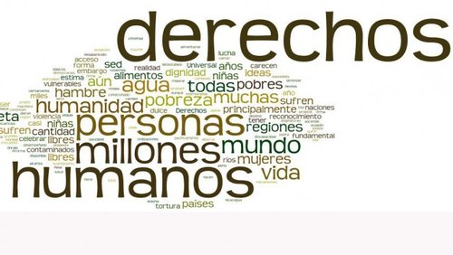

BREVE HISTORIA DE LOS DERECHOS HUMANOS
Los derechos humanos, son tan antiguos como la existencia del ser humano sobre la tierra.
Porque en la antigüedad ya se hablaba de la justicia y la paz, de la dignidad, la igualdad entre las personas y la libertad.Esto fue hace 2,000 años y ya distintas culturas se habían paliado conocer y poseer ciertos valores del ser humano. Cuando nació Cristo se proclamaba de manera clara ciertas ideas en defensa de los derechos humanos. El Cristianismo proclamaba la igualdad, la fraternidad entre las personas, la justicia social, condenaba la violencia y promovía la convivencia pacifica.
Con el renacimiento se rompen esta estructura medieval y surgen en Europa corrientes políticas, jurídicas, filosóficas, y religiosas favorables para los derechos humanos
La edad media de casi 800 años de duración, representa la etapa en que menos se desarrollaran los derechos humanos.Y hacen unos 500 años, cuando los españoles invadieron a América , trajeron a mucho esclavos de África, luego, negros e indígenas se revelaron en la búsqueda de los derechos humanos
Para saber lo qué son los derechos presentamos además, tres videos que pueden ayudar a comprender y explicar mejor el asiduo esfuerzo de investigación de un campo tan amplio como este.

DOCUMENTAL SOBRE LOS DERECHOS HUMANOS
DURACIÓN: 10:41 MINS.
